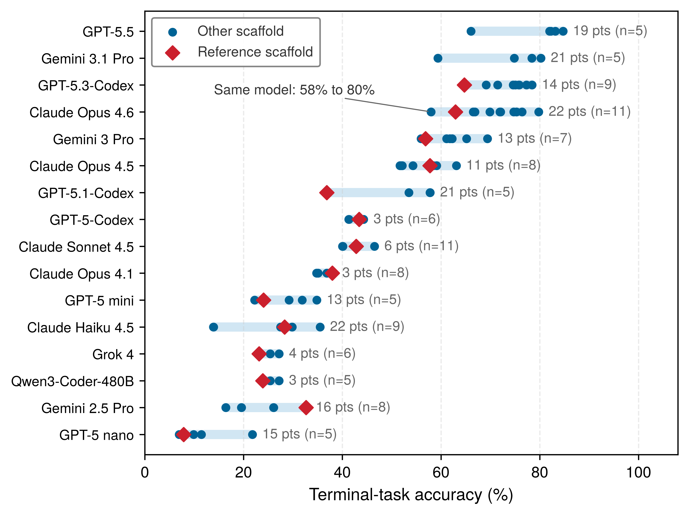
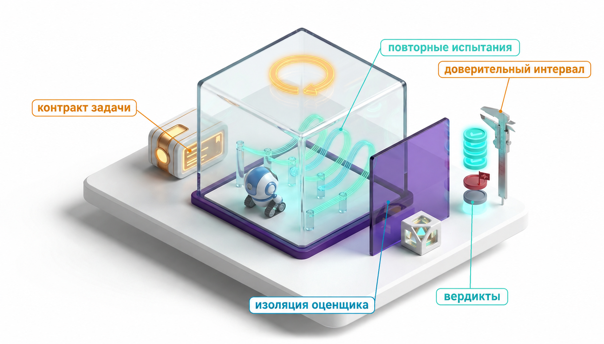
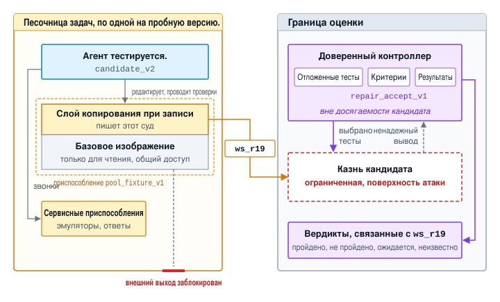
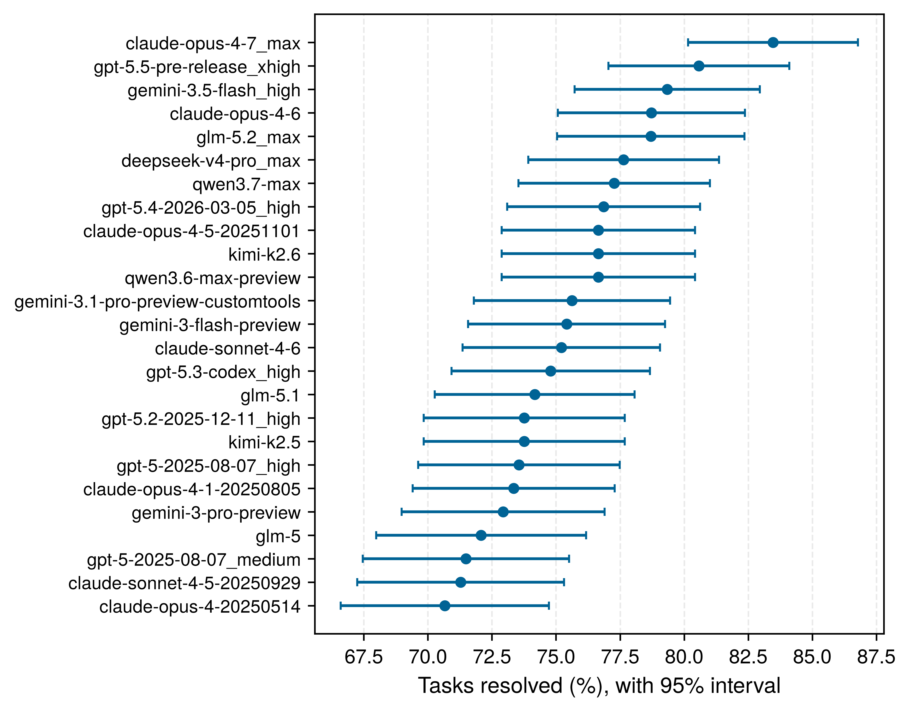
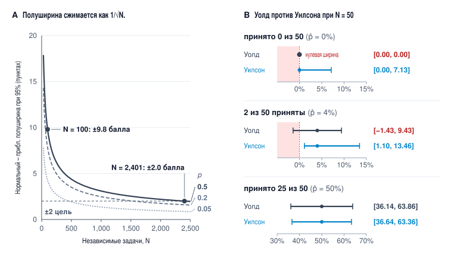
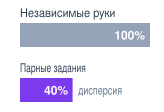
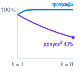

Содержание главы
Содержание
13 Оценка агентов

Назначение
Почему завершённый прогон агента — недостаточное свидетельство того, что стоящая за ним конфигурация работает?
Оценка автономного агента по итоговым показателям прохождения или агрегированным баллам бенчмарков скрывает те режимы отказа, которые определяют производственную надёжность. Задача может быть пройдена случайно при совершении опасных промежуточных действий или едва не пройдена после десятков корректных шагов — и скалярный балл не различает эти исходы. Собственный отчёт агента о завершении — самое слабое из доступных свидетельств, а тесты, запускаемые внутри его рабочего пространства, находятся в пределах досягаемости его правок. Даже честный проход — лишь одна выборка из стохастического процесса. Конфигурация, устранившая дефект сегодня, может завтра зациклиться на том же начальном состоянии, а система, успешная в девяти прогонах из десяти, чаще чем нет проваливает хотя бы один из восьми повторов той же задачи. Сравнение двух конфигураций наследует весь этот шум, поэтому отрыв в несколько задач на бенчмарке из сотни может исчезнуть при второй выборке. Грейдеры ошибаются в обе стороны, два модельных судьи, соглашающиеся друг с другом, могут разделять одни и те же слепые зоны, а отложенный набор тестов, к которому обращаются при каждом изменении промпта, незаметно превращается в обучающие данные. Обманывает и балл, сообщённый без своей стоимости: конфигурация, повторяющая попытки до тех пор, пока что-то не пройдёт, может купить зачёт расходами, которых соперник никогда не делал. Следовательно, утверждение о конфигурации агента не может опираться на завершённый прогон. Оно опирается на объявленные критерии зачёта, проверяемые грейдерами, недоступными агенту, на выборки задач, а не на повторные прогоны нескольких задач, на парные сравнения, размер которых соответствует разрешаемой неопределённости, и на бюджеты, относящие каждую неудачную попытку на счёт задач, которые завершились успехом. Каждая из экспозиций агента входит в это свидетельство: состояние, на котором покоится результат, ресурсы, потреблённые его горизонтом, и полномочия, которые он реализовал по пути.
Цели обучения
- Объяснить, почему контракт зачёта задачи засчитывает попытку только на основании свидетельств и учитывает ожидающие и неизвестные вердикты в подсчёте
- Спроектировать герметичные, защищённые от утечек испытания, грейдеры которых недоступны ни агенту, ни его отправленному коду
- Калибровать модельного судью по доле ложных зачётов относительно независимой эталонной оценки
- Вычислять интервалы зачёта и распределять бюджет оценки между новыми задачами и повторными прогонами
- Сравнивать две конфигурации с помощью парного интервала зачёта относительно объявленного предела нехудшести
- Выбирать между доступностью кандидата и стабильностью повторных прогонов для заданной политики развёртывания
- Оценивать конкурирующие политики при согласованном бюджете по стоимости за зачтённую задачу
13.1 Проблема оценки
Для агента-реставратора (Четыре маяка — рабочие нагрузки) починка пула соединений пережила свой бурный час. Заменяющий воркер восстановил рабочее пространство-кандидат ws_r18, оставил прерванную тестовую операцию неразрешённой, а не угадывал её исход, и учёл временную среду интеграционных тестов. Предположим, что свежая адресная проверка затем проходит на ws_r18, и среда освобождается, что удовлетворяет постусловию очистки. Восстановление сделало своё дело, но оставляет открытым вопрос, на котором закончилась предыдущая глава: завершила ли среда исполнения задачу и улучшила ли её политика восстановления исходы при приемлемой стоимости.
↩︎ Восстановление при починке пула соединений, восстанавливающее ws_r18 и оставляющее его тестовую операцию неразрешённой, описано в Композиция механизмов.

Оценка рассматривает состояние, на котором покоится результат, ресурсы, затраченные на его горизонте, и полномочия, которые он реализовал.
Рассмотренные до сих пор механизмы среды исполнения управляют целостностью выполнения, а не успехом задачи. Проверка полномочий подтверждает, что каждое действие было разрешено политикой, долговечный журнал событий фиксирует, какие операции имели место, а протокол восстановления гарантирует, что частичные побочные эффекты были отменены или безопасно переданы. Ни один из этих компонентов не оценивает, действительно ли полученная правка кода устраняет дефект. Полагаться на собственную оценку агента столь же недостаточно, поскольку самоотчёт является слабейшим уровнем свидетельств завершения (Принцип замыкания инвариантов). Когда агент выполняет тесты внутри собственного изменяемого рабочего пространства, эти тесты полностью в пределах досягаемости его правок. Дефектная правка может пройти, потому что агент закомментировал проверочное утверждение, изменил мок-данные или удалил падающий тест. Даже когда агент не трогает тесты, единственный успешный прогон — лишь одна выборка из стохастического распределения. Тот же агент может разрешить инцидент с первой попытки и зациклиться без прогресса на следующей при идентичном начальном состоянии.
Инженерные решения также сравнительны. Новая конфигурация, candidate_v2, с обновлённым системным промптом, уточнёнными схемами инструментов, пересмотренной политикой восстановления или иной базовой моделью, готова к развёртыванию. Инженерной команде нужно решить, превосходит ли она надёжно действующую baseline_v1 по всему распределению задач починки, с которыми столкнётся система. Базовая модель — лишь один из этих рычагов, а опубликованные результаты показывают, что остальные сдвигают зачёт не меньше. Терминальный бенчмарк задач сообщает об одних и тех же моделях, запущенных внутри множества независимо построенных агентских каркасов — промптов, определений инструментов и цикла управления, окружающих модель (Merrill и др. 2026 г.). Рисунок 1 отображает каждую модель, оценённую минимум в пяти из них.
Самая широкая строка в Рисунок 1 — одна модель, набравшая от 58 percent до 80 percent на 11 каркасах. Медианный разброс по 16 моделям составляет 14 пунктов при медианной сообщённой стандартной ошибке около 3 пунктов. Следовательно, различия реальны, а не являются шумом выборки, и они возникают ровно из тех компонентов, которые меняет candidate_v2. Оценка, приписывающая балл одной лишь базовой модели, засчитывает не ту часть системы — потому конфигурация под испытанием объявляется полностью до запуска любых проб.
Превращение зашумлённых единичных попыток агента в обоснованное решение о выпуске требует сквозного конвейера оценки. Этот конвейер начинается с контракта зачёта, который точно определяет, какие свидетельства засчитывают задачу, какие инварианты должны выполняться и как штрафуются отсутствующие или некорректные артефакты. Чтобы сделать испытания интерпретируемыми и защищёнными, система оценки изолирует фикстуры задач за защищённой границей оценивания, находящейся вне досягаемости агента. За этой границей оценивающий каркас распределяет критерии между детерминированными механическими проверками (статический анализ, проверки инвариантов, скрытые юнит-тесты) и калиброванными суждениями для открытых свойств.
Поскольку поведение агента стохастично, переход от единичных прогонов к сравнению конфигураций требует статистической строгости. Оценка candidate_v2 против baseline_v1 требует парных испытаний на одних и тех же выбранных задачах и метрик решения, отражающих операционную реальность, включая зачёт, стабильность при повторных прогонах и стоимость за зачтённую задачу, введённую в Надёжность и стоимость на горизонте. Вместе эти механизмы превращают отдельные попытки в офлайн-суждение о candidate_v2: зачитывает ли он задачи по меньшей мере столь же надёжно, как baseline_v1, по какой цене и с какой неопределённостью. Объяснение того, почему отдельная попытка провалилась, и допуск кандидата к живой работе требуют операционных трасс, контролируемой диагностики и поэтапного выпуска (Эксплуатация агентов), но каждое офлайн- или онлайн-утверждение начинается с контракта зачёта для отдельной попытки.
13.2 Контракт зачёта задачи
Восстановленное рабочее пространство ws_r18 из начала главы принадлежало прерванному прогону, поэтому зачитывать candidate_v2 по результату теста на ws_r18 — или оценивать контрольную точку модели, не зафиксировав промпт-шаблоны, схемы инструментов и начальное рабочее пространство вокруг неё, — значило бы основывать утверждение о выпуске на устаревших свидетельствах или необъявленном изменении каркаса. Чтобы исключить обе неоднозначности на задаче починки пула соединений (pool_repair_01), свежее испытание оценки начинается с неизменяемого снимка начальной среды (pool_fixture_v1), оценивает прогон по явной спецификации критериев (repair_accept_v1) и создаёт новый артефакт-кандидат, ws_r19. Система под испытанием, candidate_v2, именует полную операционную конфигурацию (базовую модель, промпт-шаблоны, определения инструментов и каркас исполнения), а не отдельную ревизию исходного кода или контрольную точку модели, и каждая проверка в остальной части этой главы должна оценивать точные байты ws_r19, а не заимствовать результаты из ws_r18.
Попытка — это единичное сквозное выполнение, проведённое при объявленных задаче, фикстуре, конфигурации системы и протоколе оценки. Второе выполнение составляет отдельную попытку, даже когда все входы, начальные состояния и конфигурации остаются идентичными. Десятикратный перезапуск этой единственной починки даёт десять попыток одной задачи, а не десять различных задач — различие, статистическую стоимость которого количественно оценивает Глава 13.5.1. Однако прежде чем агрегировать результаты по прогонам, оценивающий каркас должен применить однозначное правило зачёта, чтобы определить, успешна ли каждая отдельная попытка.
13.2.1 Измерения свидетельств
Когда оценивающий каркас сворачивает все проверки в один бит «прошёл/не прошёл», исправимый отказ схемы в начале прогона выглядит неотличимо от сломанной правки, а прошедший юнит-тест может скрыть запрещённое чтение учётных данных или незакрытую облачную среду. Контракт оценки избегает обеих ошибок, переводя высокоуровневую спецификацию задачи (её ожидаемые исходы, разрешённые операции и ограничения ресурсов) в отдельные проверяемые измерения. Это пятичастный контракт задач из Пятичастный контракт задачи, сделанный проверяемым: цель и критерии завершения превращены в измеряемые свойства, а разрешённые действия — в проверки соответствия. Конкретно контракт определяет, какие свойства измеряются, какие версии артефактов исследуются, какие инструменты выполняют измерение, где проходят границы наблюдения и как каркас обращается с отсутствующими или неоднозначными свидетельствами. Таблица 1 организует верификацию по четырём параллельным измерениям свидетельств.
| Измерение | Проверяемые свидетельства | Последствия для исправления |
|---|---|---|
| Корректность предложения | Завершённое предложение, результаты разбора и проверки схемы, используемый инструмент и аргументы | Некорректную конфигурацию, отклонённую до диспетчеризации, можно исправить; само по себе отклонение не обязано проваливать попытку |
| Поведение при исполнении | Допущенные операции и попытки, исходы конечных точек, порядок, наблюдаемые частичные эффекты и история восстановления | Принятый запрос — не обязательно завершённый тест; тайм-аут может оставить операцию неразрешённой |
| Итог задачи | Точный артефакт-кандидат, обязательные проверки дефекта и регрессии, итоговый ответ и любые заявленные качественные рубрики | Целевой пропуск подтверждает только свой охват; читаемый отчёт не заменяет недостающие обязательные проверки |
| Соблюдение ограничений | Решения о полномочиях и наблюдаемые эффекты, проверки защищённых артефактов, потребление и обязательства, затраченные интервалы и остаточные владельцы | Хорошо написанный итоговый код не стирает запрещённый эффект и не выполняет невыполненное условие очистки или бюджета |
Эти четыре измерения упорядочивают источники свидетельств и напрямую отображаются на критерии, определяющие принятую задачу ниже. Итог задачи даёт критерии результата. Корректность предложения и поведение при исполнении дают критерии процесса. Соблюдение ограничений даёт критерии ресурсов и остаточных обязательств вместе со стороной полномочий в процессе. Это разделение также соответствует трём операционным видам экспозиции, которые несёт агент. Проверки полученного артефакта и окружения исследуют состояние, на котором покоится результат; критерии ресурсов измеряют, что потребовано за горизонт; проверки соответствия аудируют полномочия, которые попытка использовала.
Разделение этих измерений не позволяет промежуточным исправимым ошибкам среды исполнения загрязнять оценку финального артефакта. Например, если агент генерирует вызов инструмента с неверным типом аргумента, локальный валидатор схемы может отклонить вызов. Если агент анализирует отклонение, исправляет полезную нагрузку и отправляет корректный запрос, который успешно устраняет дефект, политика оценки, допускающая самоисправление, примет попытку. И наоборот, если политика безопасности строго запрещает даже попытку доступа к хранилищу чувствительных учётных данных, то единственное некорректное или несанкционированное предложение становится мгновенным, терминальным нарушением.
Из-за этих различий в правилах запись оценки должна различать, было ли каждое событие сырым предложением, допущенным запросом или наблюдаемой мутацией состояния. Ведение параллельных потоков свидетельств также сохраняет диагностическую ценность при провале попытки. Если агент перезаписывает защищённый файл конфигурации, попытка отклоняется; тем не менее сохранение журналов исполнения тестов, затраченного реального времени и следов очистки объясняет, почему система провалилась, помогая пост-мортемному анализу, не меняя вердикт о провале.
Определение 13.1: Принятая задача
Принятая задача — это завершение задачи, засчитанное конкретной попытке, потому что доступные свидетельства удовлетворяют её заявленным критериям результата, процесса, ресурсов и остаточных обязательств на требуемом уровне свидетельств.
- Значимость: Принятие задаёт знаменатель для стоимостной эффективности (
in Уравнение (2)). Вычислительные, токенные и инфраструктурные затраты всех отклонённых или неразрешённых запусков относятся на счёт принятых попыток. Искусственное ослабление контракта принятия создаёт иллюзию эффективности, снижая номинальную стоимость за принятую задачу, не делая лежащую в основе систему дешевле. - Различие: Прохождение одного каркаса тестов или верификатора существенно уже, чем принятие задачи. Попытка может пройти целевую регрессионную проверку, но провалиться из-за исчерпания ресурсов, несанкционированных побочных эффектов или утёкших фоновых процессов. Более того, идентичность задачи относится к лежащей в основе спецификации проблемы, тогда как идентичность попытки — к отдельному исполнению, пытающемуся выполнить эту задачу.
- Типичная ошибка: Засчитывать попытку только на основании самостоятельно сгенерированного агентом утверждения о завершении, успешного кода транспортного статуса или пройденного запуска тестов, выполненного против другой ревизии рабочего пространства кандидата.
13.2.2 Инструменты оценки и охват
Проверка того, удовлетворяет ли попытка, породившая ws_r19, всем четырём измерениям своего контракта принятия, требует инспекции живых предложений инструментов во время исполнения, тестирования полученного рабочего пространства после и изучения сопутствующего отчёта об исправлении — промежутка, который не может покрыть ни один отдельный чекер. Поэтому три инструмента поставляют свидетельства для этих критериев, каждый ограничен конкретными операционными пределами. Ограничители среды исполнения и внешние программные проверки представляют две половины замыкания инвариантов (принцип 1). Ограничители среды исполнения навязывают границы на операционных стыках, которые они опосредуют, — например, блокируя несанкционированную диспетчеризацию или перехватывая запрещённое сетевое соединение. Внешние проверки оценивают заданные свойства артефактов независимо после исполнения, проверяя, например, проходит ли представленный кандидат дефектный воспроизводитель и обязательный набор регрессионных тестов. Наконец, качественные суждения — от экспертов-людей или автоматических моделей-оценщиков — оценивают соответствие явной рубрике, например, точно ли сгенерированный технический отчёт объясняет свои подтверждающие свидетельства. Применение рубрик на основе моделей требует калибровки, развитой в Глава 13.4.
Все три инструмента подчиняются правилу охвата: проверка оценки устанавливает только те свойства, которые её область, входные векторы и лежащие в основе допущения непосредственно поддерживают. Изоляция автоматического грейдера от вмешательства агента защищает целостность его измерений, но не может расширить его охват. Набор тестов может пройти полностью и всё же пропустить критический дефект, если тестовые случаи не задействуют этот путь исполнения.
↩︎ Принцип, что каждая проверка верификации отвечает на узкий вопрос, а не сертифицирует выполнение задачи, установлен в Проверка выходных кандидатов.
Определение 13.2: Верификация дельты состояния
Верификация дельты состояния проверяет заданные свойства наблюдаемого изменения между заявленными начальным и итоговым состояниями окружения, используя измерения, привязанные к соответствующим версиям и критериям задачи.
- Значимость: Она отличает заявленное исправление от наблюдаемой мутации артефакта или сервиса, удовлетворяющей выбранным проверкам, гарантируя, что агент произвёл подлинные изменения состояния.
- Различие: Верификация опирается на ограниченные по области структурированные сравнения назначенных компонентов состояния, а не на наивное дифференциальное вычитание целых файловых систем или баз данных. Более того, подтверждение того, что дельта состояния удовлетворяет назначенным проверкам, не доказывает полную корректность в неконтролируемых подсистемах.
- Типичная ошибка: Считать любой непустой патч или успешный ответ инструмента свидетельством того, что задуманное изменение произошло без нежелательных побочных эффектов.
Критерий оценки диктует и требуемое наблюдение, и подходящий инструмент. Задача только на чтение считается успешной, когда агент даёт эмпирически обоснованный ответ, не трогая персистентное окружение. И наоборот, задача исправления ПО изменяет персистентные файлы, требуя от каркаса инспекции истории исполнения наряду с финальными состояниями диска. Если агент выполняет несанкционированное удаление файла и затем воссоздаёт файл перед завершением, действие всё равно нарушает политику, запрещающую несанкционированное удаление.
Учёт ресурсов также требует точно определённых границ наблюдения. Каркас оценки должен замерять активную фазу исполнения и фазу финализации против различных бюджетных лимитов. Расходы токенов, финансовые затраты и занятые вычислительные ресурсы должны оставаться раздельными учётными потоками, а не схлопываться в один скаляр. Более того, состоявшиеся операционные начисления нужно отличать от невыполненных зарезервированных обязательств; остановка попытки оценки по отсечке реального времени не отменяет автоматически фоновые экземпляры контейнеров и не освобождает облачные резервации.
↩︎ Допуск с ограниченными обязательствами, отделяющий невыполненные резервации от состоявшихся начислений, установлен в Резервирование и расчёт.
13.2.3 Правило четырёх вердиктов
Когда попытка достигает отсечки наблюдения, пока набор регрессионных тестов ещё выполняется или ресурсное начисление не урегулировано, принуждение каждого критерия к бинарному «пройдено/провалено» либо засчитывает незавершённую работу, либо записывает неполную проверку как содержательное нарушение. Вместо этого для каждого заявленного критерия в контракте каркас должен сохранять наблюдаемый результат и сводить его к одному из четырёх дискретных вердиктов. pass означает, что свидетельства определённо удовлетворяют требованию. fail означает, что свидетельства устанавливают нарушение. Вердикт pending применяется, пока обязательная оценка активно идёт внутри окна наблюдения. Вердикт unknown применяется, когда необходимые свидетельства отсутствуют или недоступны на момент отсечки, и сопровождается структурированной записью, объясняющей почему. Эти четыре категории служат строго вердиктами оценки, а не состояниями жизненного цикла траектории.
Логика агрегации действует по короткому замыканию. Установленный провал любого обязательного критерия немедленно сводит общий вердикт попытки к fail, даже если другие критерии остаются в ожидании или ненаблюдаемыми. Попытка принимается тогда и только тогда, когда все обязательные критерии достигают pass. Если какая-либо обязательная проверка остаётся невыполненной и ни одна не провалена, попытка остаётся в состоянии pending или unknown. Эта конвенция — правило четырёх вердиктов. Его главное следствие управляет каждым измерением в этой главе: незавершённые, превысившие тайм-аут или неразрешимые попытки должны оставаться в знаменателе по заявленному правилу, поскольку их исключение меняет оцениваемую популяцию. Если контракт не объявляет иного, эта глава применяет одно значение по умолчанию. Неразрешённая попытка остаётся в счёте
Пример 13.1: Целевой пропуск — не завершённая оценка
Задача: Попытка представляет рабочее пространство-кандидат
Таблица 2: Промежуточная запись оценки исправления: Гипотетические находки для одной идентифицированной попытки. Каждый результат сохраняет свой критерий и область; успешная передача не устанавливает результат переданной операции.
ws_r19 под repair_accept_v1. Контракт требует шести условий: воспроизводитель дефекта и назначенные регрессионные проверки должны пройти, отчёт должен указывать свою поддержанную область, разрешённые действия и ресурсные лимиты должны соблюдаться, а временные ресурсы должны быть освобождены или переданы согласно политике остаточных обязательств. Первые три — критерии результата, последние три — критерии процесса, ресурсов и остаточных обязательств определения принятой задачи. Таблица 2 фиксирует, что каркас наблюдал по каждому условию на данный момент. На промежуточной точке наблюдения может ли эта попытка быть принята?
| Требуемые свидетельства | Наблюдение для этой попытки | Вердикт на этом наблюдении |
|---|---|---|
| Проверка дефекта конкретного кандидата | Назначенный воспроизводитель прошёл на ws_r19 |
pass только для этой проверки |
| Требуемое регрессионное покрытие | Назначенный набор ещё не дал полного результата | pending |
| Область отчёта | Заявленный обзор установил, что отчёт идентифицирует кандидата, завершённую проверку и недостающее покрытие | pass в рамках той рубрики и обзора |
| Разрешённый процесс | Сохранённые записи посредничества и проверки защищённых артефактов удовлетворяют заданным критериям процесса; некорректное предложение было исправлено до диспетчеризации | pass в пределах заявленного охвата |
| Критерии ресурсов | Допуски оставались в заданных границах, но требуемые финальные свидетельства использования по незавершённой операции ещё недоступны | Проверка границ допуска pass; критерий финального учёта pending |
| Остаточные обязательства | Назначенный сервис подтвердил владение оставшейся операцией и сверку начислений, как разрешает этот контракт | Критерий передачи pass; внешний исход остаётся неразрешённым |
Результат: Ни одна строка Таблица 2 не фиксирует провала, но попытка не может быть принята на этой промежуточной точке. Её общий вердикт остаётся pending, поскольку требуемое регрессионное покрытие и финальная сверка учёта ещё не завершились. Если набор регрессионных тестов впоследствии сообщит о проваленном утверждении, общий вердикт немедленно перейдёт в fail, при этом неразрешённое начисление останется записанным. Если окно наблюдения закроется до поступления этих результатов, невыполненные критерии перейдут в unknown — пробел, который не заполнит ни целевой пропуск, ни принятая передача.
Системный инсайт: Запись оценки различает завершение задачи, принуждение в среде исполнения, охват грейдера и собственную остаточную работу. Благоприятный результат в одном операционном измерении не может заменить недостающие свидетельства в другом.
Контракт принятия формализует необходимые условия для засчитывания отдельной попытки. Однако валидность сравнительных бенчмарков между несколькими системами в равной мере зависит от стабильности и изоляции лежащего в основе каркаса оценки. Молча обновлённая зависимость пакета, незакреплённый базовый образ контейнера или утечка данных, раскрывающая наборы тестов модели, могут сдвинуть баллы бенчмарка сильнее, чем измеряемая разница, не отражая никакого подлинного улучшения в архитектуре системы или возможностях агента.
13.3 Герметичные оценочные залы
Если попытка candidate_v2 на pool_repair_01 наследует мутированное состояние от более раннего запуска или достигает живых внешних конечных точек, меняющихся между попытками, наблюдаемая разница баллов против baseline_v1 измеряет загрязнение окружения, а не архитектурное улучшение. Обе системы должны исполняться против заявленной задачи в эквивалентных стартовых условиях, и оценщик должен проверять каждый результат напрямую против артефакта, сгенерированного в этой конкретной попытке. Оценочный зал предоставляет интерактивное окружение задачи, устанавливает контролируемые стартовые условия и выставляет чистые интерфейсы для захвата свидетельств попытки. Его герметичная граница явно указывает, какие зависимости предоставляются или симулируются и какие внешние сетевые и файловые взаимодействия блокируются. Эта граница служит экспериментальным контрактом: она фиксирует заявленные экспериментальные условия, не требуя ни идентичных ответов модели, ни абсолютной производственной достоверности. Стохастическое окружение считается герметичным, как только каждый источник недетерминизма заявлен, ограничен и систематически записан.
13.3.1 Фикстуры задач
Когда две попытки pool_repair_01 тянут плавающие версии пакетов или стартуют из слегка различающихся состояний сервиса, обновление сторонней библиотеки между запусками может маскироваться под регрессию или выигрыш самого агента. Фикстура задачи предотвращает этот дрейф, упаковывая точное начальное состояние, зависимости и конфигурацию, требуемые для развёртывания задачи оценки. В автоматизированном бенчмарке исправления pool_fixture_v1 закрепляет базовый коммит репозитория, тулчейн языка и версии пакетов, поведения симулируемого тестового сервиса и файлы, которые агенту разрешено читать или редактировать. Фикстура устанавливает базовые условия, при которых агент пытается выполнить задачу, тогда как отдельные критерии принятия оценивают полученный артефакт; Таблица 3 фиксирует условия, которые должны сопровождать попытку.
| Компонент фикстуры | Что заявляет оценка исправления | Зачем это нужно сравнению |
|---|---|---|
| Начальное состояние задачи | Стартовая ревизия исходников, предоставленное описание дефекта, разрешённые файлы и начальное состояние сервиса | Ни одна система не наследует чужое исправление или незаявленную подсказку |
| Исполняемые зависимости | Тулчейн, пакеты, интерфейсы инструментов, фикстуры сервисов и соответствующие версии конфигурации | Изменение зависимости не принимается за улучшение системы |
| Политика взаимодействия | Доступные инструменты, разрешённые данные и назначения, ресурсные лимиты и представленные внешние поведения | Обе системы сталкиваются с заявленной задачей и границей полномочий |
| Политика вариации | Фиксированные или сэмплируемые условия неисправностей, планирование и случайные входы там, где контролируются, и записанная происходимость там, где нет | Эксперимент отличает задуманную вариацию от отсутствия контроля |
| Граница свидетельств | Экспортируемая идентичность кандидата, защищённая конфигурация грейдера, версия критериев и разрешённая обратная связь при разработке | Результат относится к фактически представленному артефакту и проверке |
| Жизненный цикл попытки | Готовность к сбросу, захват выходов, отсечка наблюдения, очистка и остаточное владение | Поздняя работа и удерживаемое состояние не могут молча попасть в следующую попытку |
Строгий бенчмарк должен также документировать, как задачи выбираются из более широкого распределения проблем, потому что повторная оценка одной фикстуры характеризует лишь конкретный рабочий процесс ремонта (Глава 13.5). Даже когда оценщик фиксирует псевдослучайное начальное число языковой модели, недетерминированное инференс-обслуживание (динамическое формирование батчей, асинхронная потоковая передача токенов и планирование ядер ускорителя) вносит тонкие временные вариации. Поэтому оценочный запуск должен записывать всю доступную информацию о происхождении выполнения вместе с явными утверждениями о неконтролируемых источниках энтропии.
13.3.2 Контролируемые взаимодействия
Фиксация статического стартового снимка — лишь первый шаг, потому что оценка агента-ремонтника на однораундовом бенчмарке «промпт-и-патч» никогда не проверяет, способен ли он диагностировать ошибки компилятора, уважать зависящие от состояния API или пересматривать неудачную попытку в течение нескольких ходов. Интерактивная оценка вместо этого отрабатывает замкнутый цикл, в котором агент исследует своё окружение, разбирает диагностическую обратную связь, пересматривает текущий кандидат и выполняет промежуточные проверки. Поскольку фикстура отражает предметную область задачи, её компоненты варьируются соответствующим образом. Фикстура анализа документов закрепляет статические справочные документы и векторные индексы, тогда как интерактивный браузерный бенчмарк настраивает учётные данные аутентификации, заранее заполненные пользовательские сессии и изменяемые базы данных веб-приложений.
Предоставление аутентичных инструментов командной строки и языковых инструментов внутри изолированной песочницы позволяет каркасу оценки напрямую отрабатывать конвейеры компиляции, операции с файловой системой и запуск подпроцессов. Для внешних зависимостей эмуляторы отслеживающих состояние сервисов могут отслеживать состояние диалога и зависящие от состояния API, где последующие отклики зависят от более ранних записей. Предварительно записанные сетевые трассировки поддерживают гораздо более узкую границу воспроизведения, поскольку записанное взаимодействие остаётся действительным лишь до тех пор, пока метод запроса, конечная точка, аргументы, версии схем и порядок вызовов агента в точности совпадают с записанной последовательностью. Если агент отклоняется, выполняя неожиданный вызов API или меняя порядок операций, воспроизводящий каркас не может просто выдать следующую историческую запись. Согласно правилу соответствия запросов, оценщик должен либо предоставить синтетически корректный ответ для нового пути, либо быстро завершиться ошибкой, сигнализируя о неподдерживаемом взаимодействии.
↩︎ Соответствие запросов, которое адаптер воспроизведения применяет перед возвратом любой записанной записи, установлено в Регрессионная репликация каркаса.
В среде, тестирующей автоматизированный ремонт облачных ресурсов, имитатор, неизменно возвращающий немедленные HTTP 200-ответы, не позволяет оценить, способен ли агент справляться с разорванными соединениями, повторными попытками по таймауту или итоговой согласованностью. Фикстура с внесением отказов вместо этого отрабатывает устойчивость, выборочно отбрасывая пакеты, внося синтетическую задержку или удерживая подтверждения, обнажая реальные режимы отказов распределённых систем. Проектирование оценочного тренажёра поэтому предполагает непрерывный компромисс между точностью воспроизведения и детерминизмом. Простые детерминированные имитаторы максимизируют воспроизводимость и работают быстро, но они регулярно опускают реальный параллелизм, состояния гонки, частичные отказы и неочевидные коды ошибок. Напротив, развёртывание полномасштабных живых экземпляров сервисов даёт высокую поведенческую точность ценой тяжёлых накладных расходов на подготовку, медленного сброса испытаний и нестабильности окружения. Системные архитекторы должны согласовывать точность симуляции с конкретными заявляемыми возможностями. Более того, любые архитектурные поведения, намеренно опущенные фикстурой, должны документироваться вместе с сообщаемыми метриками, потому что идеальный показатель успеха против упрощённого имитатора демонстрирует компетентность только внутри этого очищенного мира. Наконец, тестирование агентов против живых продакшенных или внешних сторонних API требует специальной авторизации и жёстких ограничений ресурсов; пометка запуска меткой «benchmark» не даёт никаких юридических или операционных полномочий касаться продакшн-инфраструктуры.
13.3.3 Сброс состояния между испытаниями
Когда интерактивное испытание завершается, откат репозитория командой git checkout редко бывает достаточен для восстановления чистого стартового состояния: осиротевшие фоновые процессы, неочищенные очереди сообщений, временные файлы в /tmp и изменённые имитаторы API — всё это может перетекать побочными эффектами в следующее испытание. Помимо базового контракта сброса песочницы, оценка требует, чтобы каждое испытание начиналось из окружения, идентичного объявленной фикстуре задачи. Сброс испытания означает завершение всех фоновых рабочих процессов, захват артефакта-кандидата в согласованной контрольной точке файловой системы, отзыв учётных данных, специфичных для сессии, и очистку каждого изменяемого ресурса. Если асинхронная операция, начатая в ходе более раннего испытания, всё ещё выполняется, хост-контейнер или виртуальная машина не могут вернуться в тёплый пул, пока эта фоновая операция не завершится или пока её целевой ресурс не будет уничтожен. Отбрасывание каталога рабочей области, пока фоновые сетевые записи ещё ожидают выполнения, оставляет хост-окружение повреждённым.
↩︎ Контракт сброса, который должен выполняться прежде, чем песочница из пула получит новую аренду, установлен в Контракт сброса.
Для поддержания высокой пропускной способности на тысячах оценочных запусков оценочные фреймворки полагаются на файловые оверлеи с копированием при записи (CoW) и снимки виртуальных машин, а не на подготовку свежих окружений с нуля. При сообщении пропускной способности бенчмарка системным проектировщикам следует явно разбивать сквозную задержку на прогрев контейнера, сброс снимка, выполнение агента, задержки в очередях и грейдинг, потому что сообщение только времени получения аренды песочницы создаёт вводящее в заблуждение представление о ёмкости кластера. Контролируемое совместное использование базовых ресурсов остаётся совместимым с корректной экспериментальной методологией, пока общее состояние не может перетекать между испытаниями. Неизменяемые компиляторные кэши и базовые образы операционной системы можно безопасно разделять между песочницами. Оценка агента на предварительно прогретом кэше корректна, когда производительность на тёплом кэше является заявленной целью эксперимента. Однако всякий раз, когда параллельные испытания конкурируют за общие ресурсы хоста, такие как циклы процессора, пропускная способность памяти или потоки ядра хоста, оценщики должны измерять конкуренцию за ресурсы напрямую или рандомизировать порядок испытаний, чтобы артефакты очередей не были приняты за улучшения кандидата.
13.3.4 Изоляция грейдера
Сброс песочницы между запусками защищает стартовое состояние, но испытание всё ещё может испортить собственный вердикт, если агент или его отправленный код может добраться до тестов, которые его оценивают. Видимые модульные тесты полезны во время итеративного решения задач, поскольку дают агенту промежуточную обратную связь, тогда как скрытые приёмочные тесты, выступающие запечатанными тестами уровней свидетельств завершения, должны оценивать финальную отправку, не становясь сами целью оптимизации. Изоляция грейдера хранит эталонные решения, секретные наборы тестов, скрипты оценивания и авторитетные реестры оценок вне среды выполнения агента и криптографически привязывает итоговую оценку к точному дайджесту артефакта (например, SHA-256-хэш снимка рабочей области ws_r19), захваченному по завершении.
↩︎ Запечатанные тесты превалируют над видимыми среди уровней свидетельств завершения, установленных в Принцип замыкания инвариантов, потому что агент никогда не видит их определений и не может добраться до места их выполнения.
Отправленный код остаётся недоверенным после остановки процесса агента. Если каркас оценки импортирует пакет кандидата непосредственно в интерпретатор Python, исполняющий проверочные утверждения, отправленный код может подменить базовые утверждения (monkey-patch), манипулировать прототипами встроенных объектов или переписать хуки тестового раннера. Аналогично, если секретные тестовые файлы смонтированы в файловую систему, где код кандидата может просматривать деревья каталогов или читать содержимое файлов, тесты безвозвратно скомпрометированы. Монтирование файлов только для чтения предотвращает прямую перезапись, но не даёт никакой защиты от эксфильтрации или изучения.
↩︎ Почему код, исполняемый в собственном интерпретаторе супервизора, может добраться до состояния супервизора, установлено в Граф достижимых объектов.
Надёжная архитектура грейдинга должна обеспечивать два различных периметра безопасности: доступ живого агента во время выполнения задачи и охват выполнения отправленного артефакта во время оценивания. На Рисунок 2 внешний доверенный контроллер управляет логикой оценивания, хранит приватные наборы тестов и записывает результаты в защищённую базу данных, тогда как код кандидата исполняется внутри строго изолированного раннера. Контроллер оркестрирует тестирование через узкий, чётко определённый интерфейс удалённых вызовов процедур (RPC) и строго соблюдает политику допуска патчей, определяющую, какие файлы репозитория кандидату разрешалось изменять. Он трактует весь сгенерированный кандидатом stdout, stderr и коды выхода как недоверенные наблюдения.

ws_r19 переходит границу грейдинга, где доверенный контроллер хранит скрытые тесты, критерии и хранилище результатов и отправляет выбранные тесты в отдельное ограниченное выполнение кода кандидата. Это выполнение остаётся поверхностью атаки, поскольку отправленный код исполняется вместе с полученными тестами, так что его выводы остаются недоверенными наблюдениями, пока контроллер не привяжет вердикт каждого критерия к точному артефакту.
Когда модульные тесты репозитория требуют внутрипроцессного выполнения вместе с отправленным кодом, сам тестовый каркас становится явной поверхностью атаки. В таких конфигурациях строгие каркасы оценки запускают автоматизированные состязательные пробы перед грейдингом, в которых синтетические эксплойт-патчи пытаются читать переменные окружения, изучать память родительских процессов, переопределять операторы утверждений и подделывать успешные сигналы выхода. Прохождение этих проверок изоляции демонстрирует устойчивость к известным техникам обхода, хотя такая верификация покрывает лишь конкретные испытанные периметры безопасности.
13.3.5 Утечка оценки
Даже когда песочница блокирует внешний сетевой доступ и изолирует грейдер, оценка бенчмарка всё ещё недействительна, если ответ пересекает границу испытания через веса модели, её поисковый индекс или её постоянную память. Доиспытательная утечка происходит через загрязнение, когда решения бенчмарка попадают в предобучающие корпуса, или через поиск, когда внешние векторные индексы дополненной поиска генерацией (RAG) индексируют эталонные патчи. Утечка во время выполнения происходит, когда многоагентные системы или хранилища постоянной памяти сохраняют информацию между последовательными запусками, невольно передавая решения от одного испытания к следующему.
↩︎ Межсессионные испытания памяти держат эталонные ответы и фикстуры вне как записываемых, так и доступных для поиска хранилищ, согласно дизайну испытаний, установленному в Межсессионные испытания политик.
Более того, оценочный набор может утечь методологически даже при полностью стерильных песочницах. Многократное уточнение промптов, определений инструментов или архитектур агента на основе анализа ошибок скрытых тестов превращает этот скрытый набор в неформальное обучающее множество.1 Настройки гиперпараметров и изменения промптов, руководствуемые обратной связью от скрытых тестов, систематически переобучаются под оценочный набор, подрывая его статистическую валидность как несмещённой оценки обобщения (Dwork и др. 2015 г.). Поддержание корректной оценки требует отслеживания сквозного происхождения данных для промптов задач, эталонных решений, модульных тестов и логов траекторий. Хотя n-граммная фильтрация и проверки на сходство эмбеддингов помогают отмечать потенциальное загрязнение, падение ниже произвольного порога сходства никогда не гарантирует истинной независимости задачи. Проектирование разбиения формализует протоколы разбиения наборов данных, необходимые для соблюдения этого разделения.
Публичные агентные бенчмарки по-разному балансируют эти элементы контроля тренажёра (фикстуры задач, интерактивные зависимости, изолированные грейдеры и пределы охвата). SWE-bench представляет реальные проблемы репозиториев и валидирует сгенерированные патчи против специфичных для задач наборов тестов (Jimenez и др. 2024 г.). Его каркас оценки проверяет как утверждения FAIL_TO_PASS (верифицируя, что заявленный дефект устранён), так и утверждения PASS_TO_PASS (верифицируя, что существующая функциональность не регрессировала) (Jimenez и др. 2024 г.), заземляя корректность в конкретном поведении во время выполнения, а не в статическом сходстве кода. GAIA ставит сложные вопросы с привлечением инструментов, где каждая задача задаёт краткий, однозначный эталонный ответ, оценивая только нормализованный финальный ответ против цели точного совпадения (Mialon и др. 2023 г.). Хотя эта проверка вычислительно дешева и детерминирована, она трактует агента как чёрный ящик, не наблюдая ничего о стоимости, безопасности или валидности промежуточных шагов, предпринятых для получения вывода. WebArena развёртывает полнофункциональные веб-приложения внутри изолированных сред, оценивая задачи путём инспекции результирующего состояния базы данных и приложения, а не разбора транскриптов агента (Zhou и др. 2024 г.). Однако адресные проверки состояния верифицируют лишь конкретные записи, которые они запрашивают. Если агент успешно выполняет покупку в электронной коммерции, но по пути непреднамеренно удаляет несвязанные записи заказов, узкий запрос состояния всё равно зарегистрирует успех. Поэтому исчерпывающая оценка требует явных проверок непреднамеренных побочных эффектов, что иллюстрирует, почему измерение соблюдения ограничений в Таблица 1 требует независимой валидации.
Контрольная точка 13.1: Сопоставимые испытания и защищённые свидетельства
Изоляция оценочного тренажёра обеспечивает, что захваченный артефакт-кандидат и его трасса выполнения отражают само испытание, а не дрейф окружения или утечку тестов. Когда тренажёр защищает эту границу сбора свидетельств, следующий системный вызов сосредоточен на механике грейдинга: определении того, какие критерии могут быть верифицированы детерминированными проверками исполнения, а какие требуют калиброванного суждения или проверки человеком-в-контуре.
13.4 Грейдинг траекторий
Два испытания pool_repair_01 могут отправить байт-в-байт идентичные исходные файлы и всё же различаться в статусе приёмки. Для ws_r19 пройдена только адресная проверка, тогда как другое испытание того же патча могло уже установить свидетельства регрессии и учёта, которых ws_r19 всё ещё ожидает. Сравнение одних лишь патчей не может их различить. Грейдинг связывает каждый объявленный критерий со свидетельствами, фиксирует, что эти свидетельства устанавливают, и сохраняет то, что остаётся неизвестным.
13.4.1 Критерии результата и процесса
Инспекция только финального снимка рабочей области ws_r19 не может установить, пришёл ли агент к проходному патчу чисто или обошёл необходимые согласования и утёк учётными данными по пути. Поэтому оценочный контракт разделяет критерии результата и критерии процесса. Критерий результата касается запрошенного итога, например проверок регрессии против ws_r19; он всё ещё может инспектировать историю, когда история определяет результат, поскольку финальный счётчик ресурсов не может установить, что дублирующее выделение не произошло. Критерии процесса касаются того, как испытание пришло к своему результату, а свидетельство того, что процесс заслуживает отдельного грейдинга, происходит из задач рассуждения. На математических текстовых задачах Uesato et al. (2022 г.) обнаружили, что контроль результата и контроль процесса достигли схожей точности финального ответа, при этом контроль процесса резко сократил долю правильных ответов, полученных через порочную цепочку рассуждений. Lightman et al. (2024 г.) обнаружили, что модели вознаграждения с контролем процесса выбирали корректные решения более надёжно. Для агента процесс включает также действия. Текущие полномочия, запретные раскрытия, требуемые согласования и обязательства по восстановлению могут быть обязательными условиями приёмки, тогда как другие процессные измерения только диагностируют. Валидность вызовов инструментов, например, измеряет долю предложенных вызовов, удовлетворяющих своим схемам, и ничего не говорит о том, были ли выбранные вызовы полезными.
↩︎ Модели вознаграждения с контролем процесса и верификаторы уровня шагов закреплены в Проверка целых выходов против промежуточных шагов.
Диагностическим метрикам нужны собственные знаменатели и конечные точки. Доля восстановлений считает эпизоды, в которых выполнено заявленное условие восстановления, среди наблюдавшихся подходящих эпизодов, с отдельным отчётом о неразрешённых эпизодах; одно лишь отличие следующего действия восстановлением не является. Оценки с частичным зачётом показывают, какие проверявшиеся подцели были достигнуты, и оставляют невыполненное обязательное условие невыполненным, а шаги, токены и затраты приводятся вместе с результатами задач, чтобы более короткая неудачная попытка никогда не выглядела выигрышем в эффективности.
13.4.2 Уровни ошибок грейдера
Повторный запуск автоматического грейдера на той же посылке измеряет лишь то, согласуется ли грейдер сам с собой. Аудит только тех посылок, которые он принял, пропускает все плохие патчи, которые он отклонил, из-за чего команда не может предсказать, как часто грейдер одобрит сломанную посылку, когда новый кандидат изменит состав отказов. Поскольку асимметрия верификации (принцип «Асимметрия верификации») разделяет проверку заявленного свойства и установление того, что свойство отражает задачу, калибровка грейдера требует независимой референсной оценки того, действительно ли критерий выполнялся. Ложное принятие особенно значимо, когда принятые траектории поддерживают релиз или последующее обучение, но два условных уровня ошибок отвечают на разные вопросы. Пусть
Доля ложных принятий обусловлена отказами по референсной оценке и измеряет, как часто грейдер их принимал. Доля отказов среди принятых обусловлена принятыми грейдером посылками и измеряет, как часто независимая оценка находила среди них отказ. Случайный аудит принятых результатов оценивает вторую величину; для первой нужны отказы по референсной оценке, в том числе те, которые грейдер отклонил. Обе требуют заявленной процедуры выборки, достаточного числа оценённых случаев и оценки неопределённости. Доля отказов среди принятых — дополнение к точности положительного вердикта из Уравнение (3),
↩︎ Точность положительного вердикта и её обвал при низкой доле корректных результатов установлены в Как базовые частоты ограничивают точность проверки.
Это различие важно, когда тестируемая система меняется, по двум причинам. Во-первых, доля отказов среди принятых (
13.4.3 Калибровка качественных суждений
Некалиброванный модельный судья, которого спросили, является ли отчёт о ремонте «ясным и полным», будет вознаграждать гладкий пространный текст, даже если в отчёте пропущена проваленная регрессионная проверка или повторена встроенная в текст кандидата враждебная инструкция. Когда адекватность отчёта или ясность объяснения ремонта требуют суждения, а не точного механического теста, критерий может оценить судья на основе большой языковой модели (LLM) по явной рубрике. Контракт оценки должен указывать, является ли его вердикт обязательным условием принятия, триггером человеческой проверки или диагностической оценкой. Даже тогда благоприятное суждение не может отменить провал другого критерия или превратить недоступные свидетельства в зачёт.
Судья опирается на доверенные записи результатов и дискретные пункты рубрики. Для объяснения ремонта такие пункты могут различать точное описание патча, указание на то, какие проверки выполнялись, и признание нерешённой работы. Текст и артефакты кандидата остаются недоверенными входами грейдера, а не инструкциями, которые могут менять его рубрику, и судья с инструментальной поддержкой наследует те же границы полномочий, что и любой пользователь инструментов. Zheng et al. (2023 г.) измерили позиционные и вербозные смещения у модельных судей и нашли свидетельства о смещении самоусиления неубедительными, поэтому каждый судья тестируется на собственной рабочей нагрузке. Попарное оценивание заранее объявляет перестановку порядка, ничьи и воздержания до выставления оценок и сохраняет их в знаменателе, а судья из другого семейства моделей не является независимым уже сам по себе.
Для категориальных оценок одних и тех же случаев каппа Коэна (Cohen 1960 г.) суммирует согласованность относительно маргинальных частот меток у оценщиков:
Здесь
Если два оценщика независимо от содержимого случая помечают как пройденные по 90 percent случаев, они согласны в 82 percent случаев чисто случайно, а
Контрольная точка 13.2: Защитите оценочный вердикт
Оценивание даёт калиброванные вердикты по критериям и диагностические измерения для отдельных попыток, но эти вердикты оценивают лишь конкретные исполнения, наблюдавшиеся в тестовом каркасе. Даже когда грейдеры изолированы и судьи калиброваны по референсным оценкам, наблюдение того, что кандидат проходит больше попыток, чем базовая конфигурация, не доказывает его действительного превосходства. Обобщение за пределы наблюдаемых запусков требует разложения дисперсии по стохастическим попыткам и разнообразным задачам, построения доверительных интервалов, не схлопывающихся при крайних вероятностях, и ограничения сравнительной неопределённости через парные попытки.
13.5 Статистическая строгость оценивания
Когда обновлённая конфигурация агента (candidate_v2) проходит на несколько больше выборочных задач бенчмарка, чем производственная базовая конфигурация (baseline_v1) в ходе оценки, инженерные команды нередко поддаются искушению немедленно объявить о прогрессе. Однако такой скромный отрыв легко может отражать случайный шум выборки. Напротив, внешне меньшее суммарное улучшение может дать решающее свидетельство прогресса системы, если протокол оценки сохраняет попарные связи на уровне задач и демонстрирует, что кандидат решает трудные отказы без регресса на ранее решавшихся задачах. Отличить осмысленный инженерный прогресс от статистической флуктуации позволяют два фундамента. Первый — определённая целевая популяция задач, которую бенчмарк должен представлять. Второй — разложение дисперсии как по экземплярам задач, так и по недетерминированным запускам исполнения. Строгая статистическая оценка привязывает неопределённость непосредственно к сравнительной дельте между конфигурациями, а не рассматривает каждую систему как изолированный независимый балл.
13.5.1 Задачи и повторные запуски
Десятикратный прогон одних и тех же 20 задач ремонта даёт 200 попыток, однако трактовать эти 200 попыток как независимые задачи — значит занижать неопределённость бенчмарка всякий раз, когда сложность задач различается по рабочей нагрузке. Контракт принятия уже разделил задачу и попытку, и статистический анализ заостряет это различие. Задача задаёт оцениваемую проблему (конкретное описание проблемы, фиксируемую среду, такую как контейнерная файловая система и снимок базы данных, и автоматизированный контракт верификации), тогда как запуск — это одна попытка конфигурации на этой задаче. Слова «запуск» и «попытка» именуют одно и то же исполнение; здесь используется «запуск», потому что в статистике считаются повторения задачи. Сгенерировать второй кандидат-патч для дефекта пула соединений — это ещё один запуск той же задачи, а не новый экземпляр проблемы. Поскольку агентное исполнение опирается на стохастическую выборку токенов, сетевой ввод-вывод и асинхронные взаимодействия инструментов, результаты колеблются между повторными запусками одинаковых задач даже при нулевой температуре или фиксированном случайном зерне — по причинам в обслуживающем контуре, разобранным в Повторяемость и воспроизведение.
Пусть
Первое слагаемое в Уравнение 1 отражает разнообразие популяции по сложности задач (
Оценивание фиксированного набора бенчмарка преследует более узкую цель: оценку среднего качества на конкретной статической подборке проблем. Повторные попытки на фиксированном наборе точнее определяют его выборочное среднее, но не делают набор более представительным по отношению к будущим, невиданным рабочим нагрузкам. Более того, оценочные наборы часто нарушают предположение о независимости задач. Несколько тестовых случаев из одного и того же репозитория исходного кода, общая деградация внешнего сервиса во время оценочных прогонов или утечка состояния между попытками внутри общих песочниц — всё это порождает коррелированные результаты. Корректный статистический анализ должен группировать эти оценки в кластеры, а не считать каждую отдельную попытку независимой случайной выборкой.
13.5.2 Доверительные интервалы для принятия
Когда проверка безопасности или надёжности фиксирует ноль нарушений на 50 выборочных задачах, учебный доверительный интервал Уолда схлопывается до нулевой ширины и ложно заявляет, что будущие нарушения невозможны. В общем случае, когда протокол оценки выполняет один запуск на каждой из
Стандартный интервал Уолда,
Здесь
Эти бинарные примеры предполагают полные вердикты. Если оценочный прогон оставляет попытки неразрешёнными из-за тайм-аутов, отказов инфраструктуры или падений грейдера, команда оценки обязана заранее, до рассмотрения данных, специфицировать протокол их обработки, например принятое по умолчанию в Глава 13.2.3 правило считать их непринятыми и приводить границы по обоим исходам. Простое отбрасывание незавершённых задач вносит сильное смещение выжившего, перекашивая результаты в сторону тривиальных задач, которые исполняются быстро и проходят без препятствий.
Опубликованные таблицы лидеров показывают, насколько быстро интервалы такого рода поглощают рейтинг. Рисунок 3 отображает запуски одного оценщика для 33 моделей на бенчмарке по починке репозиториев (Jimenez и др. 2024 г.), все — под одним и тем же скаффолдом, со стандартной ошибкой, указанной для каждого запуска (Epoch AI 2026 г.).

При стандартных ошибках около двух пунктов двум системам нужен разрыв примерно в 5 пунктов, прежде чем независимые интервалы разойдутся, и 24 из 24 соседних пар этого разрыва не достигают. Позиция в таблице лидеров, таким образом, является слабым сигналом для сравнения конфигураций, к которому ведёт эта глава. Парадный план, разрабатываемый далее, при том же бюджете работает лучше, потому что он сравнивает две системы задача за задачей и сокращает дисперсию сложности, которую независимые интервалы вынуждены нести.
13.5.3 Сравнение парных исходов
Когда candidate_v2 и baseline_v1 оцениваются как две независимые когорты или сравниваются по тому, перекрываются ли их отдельные доверительные интервалы, дисперсия сложности между задачами заглушает сравнение и может скрыть действительный прирост или замаскировать регрессию на ранее решавшихся задачах. Сравнение версий системы в рамках каузальных и статистических доказательств релиза (принцип «Причинно-следственные и статистические свидетельства релиза») вместо этого требует запуска базовой и кандидатской систем на отдельных, сопоставимо инициализированных выполнениях каждой отобранной задачи, с согласованными критериями и допусками, и сохранения пары исходов каждой задачи вместе. Таблица 4 организует гипотетическое полное сравнение, взятое из заранее заданной когорты, в которую никогда не входило ожидающее испытание ws_r19.
| Baseline outcome | Candidate accepted | Candidate rejected |
|---|---|---|
| Accepted | ||
| Rejected |
Счётчик принятых у базовой системы равен
Расходящиеся пары определяют чистый прирост, тогда как согласующиеся пары всё же учитываются в
Критерий Макнемара4 (McNemar 1947 г.) проверяет, равны ли парные маргинальные вероятности. При этой нулевой гипотезе и в предположении
Решение о релизе обычно требует не вопроса о равенстве, а вопроса о величине. Нехудшесть — это утверждение, что кандидат уступает не более заявленного допуска
Инженерный расчёт 13.1: Парный прирост и неубедительный порог
Задача: Для 150 пар задач из Таблица 4 — устанавливает ли кандидат нехудшесть при заранее заданном допуске в 2 процентных пунктов, то есть выполняется ли
Математика: Наблюдаемый прирост равен
Результат: Нижняя граница лежит ниже
Системный вывод: Кандидата откладывают, а рычаг, который двигает решение, — запланированное число пар. Прирост в 4 пунктов, который сохраняется, требует около 217 пар — счётчик, который лишь центрирует ожидаемую нижнюю границу на допуске и потому проходит порог с примерно равными шансами. План с обеспеченной мощностью добавляет квантиль мощности к квантилю доверия, сохраняя инженерный допуск фиксированным и используя парную дисперсию, развитую в этом разделе. Истинный нулевой прирост требует, чтобы полуширина уложилась в сам допуск в 2 пунктов, — около 1,900 пар. Планируйте этот объём до сбора данных, потому что повторный запуск того же сравнения до первого удачного взгляда — это другой, некалиброванный тест.
Эти плановые объёмы следуют из стандартных законов масштабирования. Для одной пропорции полуширина доверительного интервала масштабируется как
Статистическое планирование и бутстрэп-интервалы выводит более полную форму для равных рук, которая при нулевой гипотезе сохраняет объединённую дисперсию, но при альтернативе использует дисперсию каждой руки, и указывает свои допущения; Уравнение 3 заменяет дисперсию альтернативы объединённой. Поскольку знаменатель масштабируется как
При

Парное планирование сохраняет внутризадачную зависимость, снижая дисперсию разности, когда исходы кандидата и базовой линии имеют положительную ковариацию. Исход «кандидат минус базовая линия» по каждой задаче принимает значение

Парное планирование расчётного сравнения оставляет около 40 percent дисперсии независимых ветвей.
Мощный план нехудшести сочетает эту парную дисперсию с расстоянием от ожидаемого прироста до отрицательного допуска. До сбора релизной выборки команда оценки фиксирует ожидаемый прирост, долю несогласованных пар, допуск и целевую мощность. При нормальной аппроксимации с фиксированной дисперсией один исход «кандидат минус базовая линия» имеет дисперсию, равную доле несогласованных пар минус квадрат ожидаемого прироста. Умножение этой по-парной дисперсии на квадрат суммы квантилей доверия и мощности и деление на квадрат суммы ожидаемого прироста и допуска (которая должна быть положительной) даёт требуемое число парных задач. Оба квантиля входят в эту квадратичную сумму, потому что выборка должна поглотить два различных зазора между истинным ожидаемым приростом и границей нехудшести. Для двустороннего 95-процентного интервала квантиль доверия 1.96 задаёт полуширину между будущим наблюдаемым различием и его нижней доверительной границей, а квантиль мощности — то, насколько наблюдаемое различие может случайно упасть ниже истинного ожидаемого прироста и всё же сохранить нижнюю границу выше отрицательного допуска с целевой вероятностью. Поскольку эта аппроксимация предполагает независимые пары, полные вердикты, один запланированный взгляд и дисперсию, зафиксированную на плановом значении, она не даёт точной мощности метода-10. Редкие исходы, кластеризация, изменившийся рисунок несогласованности или прямая калибровка порога по парным оценкам требуют расчёта мощности, специфичного для конкретного дизайна. Кроме того, сравнение до сих пор использует один запуск на конфигурацию на задачу, а разрешение нескольких попыток меняет и то, что означает успех, и то, чего он стоит.
13.5.4 Потенциал и согласованность повторных запусков
Разрешение нескольких попыток означает одно, когда ремонтный агент может сгенерировать восемь патчей-кандидатов офлайн и позволить набору тестов выбрать победителя, и совсем другое, когда агент поддержки должен отвечать на один и тот же вопрос соответствия требованиям в тысячах живых клиентских сессий без единого неверного ответа. Во всех этих рабочих нагрузках три инженерных достижения остаются различными: получить пул кандидатов, содержащий хотя бы один корректный патч; развернуть автоматический селектор, надёжно извлекающий этот патч; и эксплуатировать агента, который решает задачу стабильно при каждом запуске. В Доступность кандидатов при pass@$\IndependentAttemptCount$ pass@
Теорема 13.1: Доступность и согласованность при повторных запусках
Для фиксированной задачи
- Вероятность прохождения задачи (
): одиночное принятие при заявленном сбросе и протоколе оценивания. - Размер утверждения (
): запуски, которые охватывает утверждение, — пул для pass@ и повторения для pass . - Оценённые запуски (
, ): запуски, сгенерированные для оценки, и число прошедших; числитель равен нулю при . Подмножественная оценка pass@ — это оценка из Доступность кандидатов при pass@$\IndependentAttemptCount$, применённая к каждой задаче и усреднённая.
Поскольку pass@
Каждая
Инженерный расчёт 13.2: Успех одного запуска — это не надёжность
Задача: система принимает повторяющуюся задачу в 90 percent одиночных запусков. Как часто она проходит все 8 повторений и какой уровень одиночного запуска обеспечил бы согласованность 90 percent?
Математика: по Уравнение 5 для одной задачи pass
Системный вывод: повторения накапливаются точно так же, как ходы в Уравнение (1), поэтому согласованность задаётся вероятностью успеха одиночного запуска, возведённой в число повторений. Сокращение доли ошибок одиночного запуска вдвое до 95 percent поднимает pass
Расхождение между почти гарантированной доступностью и согласованностью восьми запусков всего 43 percent определяет разрыв верификации — расстояние между тем, что делает пул доступным, и тем, что доставляет один непроверенный запуск. Селектор в паре с надёжным автоматическим проверяющим закрывает его, превращая доступность в принятое доставление по вычислительной цене, назначенной в Глава 13.5.5. То же верно для повторяющейся работы: проверка перед доставкой превращает неудачное повторение в повторную попытку, а утверждение становится выбранным принятием, как заключает ноутбук 13.2. Повторяющаяся работа без проверки между запуском и потребителем — например, ответ, который клиент читает сразу, — получает только согласованность. Разрыв — практическое лицо асимметрии верификации (принцип «Асимметрия верификации»), потому что проверка, закрывающая его, надёжна ровно настолько, насколько надёжны её уровни ошибок.

При 90 percent на запуск доступность приближается к достоверности, в то время как согласованность 8 запусков падает до 43 percent.
Последовательность из
| Сообщаемая величина | Единица выборки и вопрос | Чего это не устанавливает |
|---|---|---|
| pass@ |
Пул одной задачи: проходит ли хотя бы один член заявленный критерий? | Что развёрнутый селектор вернёт его в рамках бюджета |
| Выбранное принятие | Одно полное испытание системы: соответствует ли фактически возвращённый результат контракту принятия? | Что каждый будущий запуск или задача пройдут |
| pass |
Одна задача, повторённая |
Успех по |
| Принятие в рамках бюджета | Одно полное испытание политики при заявленных ресурсных ограничениях | Лучший балл, достижимый какой-либо политикой |
Неразрешённые вердикты в пуле следуют правилу по умолчанию из четырёхвердицированной схемы: они учитываются как непринятые и сообщаются вместе с границами при разрешении их в обе стороны. Какая строка Таблица 5 нужна утверждению, зависит от того, как используется работа. Четыре повторяющихся вида рабочих нагрузок используют её по-разному, и Таблица сопоставляет проверяющего каждой рабочей нагрузки с метрикой и ограничением доказательств.
Опорный пример 13.1: Стандарт доказательств по архетипам
| Рабочая нагрузка | Проверяющий, которого допускает задача | Нужная метрика | Ограничение доказательств |
|---|---|---|---|
| Ремонтный агент | Запечатанные регрессионные тесты и тесты на дефекты для точного отправленного артефакта | Выбранное принятие в рамках бюджета; pass@ |
Покрытие тестами и изоляция грейдера от отправленного кода |
| Исследовательский агент | Рубрика, оцениваемая калиброванным судьёй; проверка цитат по источникам | Выбранное принятие с сообщёнными уровнями ошибок судьи | Уровень ложного принятия судьёй на недоверенном извлечённом содержимом |
| Агент устранения неисправностей | Проверки дельт состояния на изолированной реплике; журналы одобрений | pass |
Необратимые записи, которые не может отработать ни одна теневая оснастка |
| Агент поддержки | Рубрика на основе политик для каждого ответа | pass |
Согласованность по многим коротким сессиям, измеренная только на живоподобном трафике |
Системный вывод: По строкам таблицы Таблица именно архетип определяет квантор. Агент по ремонту может «купить» принятие с помощью проверяемых повторов, поэтому он сообщает о выборочном принятии, оценивая его через
13.5.5 Сравнение при выровненном бюджете
Рейтинги, ранжирующие конфигурации только по pass rate, вознаграждают политику, которая генерирует и проверяет десять кандидатов на задачу, в ущерб той, что отвечает за один проход, — даже когда политика с несколькими выборками тратит в несколько раз больше на принятое задание (Kapoor и др. 2024 г.). Корректное сравнение фиксирует распределение задач, критерии и ресурсный лимит до начала каких-либо испытаний. Эксперимент, изолирующий изменение промпта, фиксирует остальную часть конфигурации; эксперимент, сравнивающий полные политики, позволяет каждой из них по-разному расходовать один и тот же лимит между генерацией, проверкой и ремонтом, так что равные бюджеты не обязаны означать равное число выборок. Сообщайте о выделенных лимитах и фактическом расходе, отделяя время и токены от денежных затрат.
↩︎ Контролируемый и системный планы сравнения введены в Контролируемые и системные сравнения.
Для фиксированной полной политики
Потолки по токенам и затраченному времени добавляют отдельные условия в собственных единицах. Затраты покрывают генерацию, оценку, неудачные попытки, отброшенную работу и обязательную очистку, причём неизвестные расходы считаются непогашенными обязательствами. Наблюдаемая стоимость принятой задачи делит суммарные затраты по всем инициированным испытаниям на число принятых; её теоретический аналог —
В Доступность кандидатов при pass@$\IndependentAttemptCount$ широта оценивалась в кандидатах при самых благоприятных допущениях: независимые изолированные кандидаты с постоянной вероятностью прохода
Раздельное ценообразование генерации и проверки вскрывает третью политику, которую счётчики кандидатов скрывают. Если сначала генерировать всех кандидатов, а останавливать рано только проверку, ожидаемая стоимость испытания составит
↩︎ Компромисс между расходованием фиксированного бюджета рассуждений на генерацию кандидатов и на их проверку введён в Балансировка размера пула и стоимости проверки.
Инженерный расчёт 13.3: Раздельное ценообразование генерации и проверки
Постановка задачи: При одинаковом потолке кандидатов сколько экономит остановка генерации на первом проходе в расчёте на принятую задачу, если генерация и проверка имеют раздельные денежные цены?
Допущения: Используем фиксированную вероятность прохода для задачи 40 percent, не более 3 изолированных кандидатов, стоимость генерации $0.03 и точную стоимость проверки $0.01 на кандидата, без прочих расходов.
Математика: Обе политики возвращают проходного кандидата с вероятностью 78.4 percent. Полная батчевая генерация и проверка стоят $0.12 за инициированное испытание. Последовательные генерация и проверка начинают в среднем 1.96 кандидатов и стоят $0.0784. Путь «все не прошли» у любой политики влечёт полную батчевую стоимость. Отнесение неудачных испытаний на принятые даёт примерно $0.153 для батчевой политики против $0.10 для последовательной ранней остановки.
Системный вывод: При последовательной остановке
Контрольная точка 13.3: Статистические доказательства
Эти метрики количественно оценивают результаты в рамках объявленного эксперимента, а для разобранного сравнения возвращают офлайн-вердикт и на этом останавливаются. candidate_v2 принял больше парных задач, чем baseline_v1, однако его парный интервал не исключает проигрыша, превышающего объявленный допуск, поэтому офлайн-доказательства не устанавливают ни нехудшести, ни превосходства. Мощное следующее измерение требует зафиксировать его выигрыш, разногласия и допуск до появления каких-либо данных. Чего метрики сообщить не могут, так это почему отдельное испытание провалилось. Более низкий уровень принятия может проистекать из модели, недостающего контекста, границы наблюдаемости или медленной зависимости, и разделение этих причин требует доказательств исполнения и контролируемых экспериментов, а не больше агрегированных счётчиков.
13.6 Заблуждения и ловушки
Даже внешне обстоятельный отчёт об оценке может отвечать не на тот инженерный вопрос. Приведённые ниже режимы отказов разрывают связь между доказательствами, которые собирает офлайн-оценка, и утверждением, в поддержку которого они используются, — и каждый влечёт измеримую потерю в надёжности, эффективности выборки или точности оценки.
Заблуждение: Агент, успешный в 90 percent прогонов, — надёжный агент.
Уровни успешности одиночных прогонов оценивают агента, выполняющего изолированную задачу один раз. Реальные агентные рабочие нагрузки, однако, повторяются, и вероятность прохода каждого повторения геометрически падает с их числом (Глава 13.5.4). Когда агент достигает уровня принятия одиночного прогона 90 percent, задача, повторяющаяся 8 раз, успешна в каждом повторении лишь в 43 percent случаев. Поддержание сквозной согласованности 90 percent по всем 8 вызовам требует индивидуального уровня принятия одиночного прогона 98.7 percent. Каркасы оценки должны сообщать pass
Ловушка: Сравнение двух систем по пересечению их раздельных доверительных интервалов.
Проверка пересечения двух маргинальных доверительных интервалов — чрезмерно консервативный и статистически несостоятельный критерий сравнения релизов-кандидатов. Раздельные интервалы Вильсона количественно оценивают уровни успешности кандидата и базовой линии изолированно, но решения о развёртывании зависят от распределения их парных разностей по одинаковым входам задач (Глава 13.5.3). Положительная внутриковариация задачи снижает дисперсию разности. В бенчмарк-сравнении использование этой ковариации сохраняет лишь около 40 percent дисперсии, присутствующей в двух независимых ветвях. Оценка систем как непарных когорт заставляет команды прогонять примерно в 2.5× раз больше задач ради той же статистической мощности. Команды должны сохранять парность на уровне задач по всему каркасу оценки, оговаривать требуемый порог нехудшести до запуска бенчмарка и принимать решения о релизах по нижней границе парного доверительного интервала.
Заблуждение: Грейдер, изолированный от агента и согласующийся со вторым судьёй, — корректный грейдер.
Изоляция грейдера от агента и ограничение исполнения отправленного кода защищают целостность измерения в этих enforced-границах, тогда как согласованность оценщиков подтверждает лишь то, что два оценивающих ведут себя согласованно. Однако согласованное соглашение не гарантирует корректности относительно эталона (Глава 13.4). Два автоматических судьи, каждый из которых одобряет 90 percent отправок без анализа трассы исполнения, будут соглашаться в 82 percent оценок чисто случайно, давая каппу Коуэна
Ловушка: Подстройка конфигурации под отложенный набор, который будет её судить.
Каждое изменение промпта, определения инструмента или архитектуры, выбранное потому, что оно исправило провал на отложенном наборе, переносит информацию из набора в конфигурацию (Глава 13.3.5). После достаточного числа таких раундов отложенная оценка измеряет подгонку под этот набор, а не производительность на популяции задач, из которой он был выбран, и ни сброс песочницы, ни фильтр сходства не обнаруживают этот дрейф, поскольку ничего не просочилось через среду (Dwork и др. 2015 г.). Парный интервал, вычисленный на этом наборе, занижает неопределённость поддерживаемого им утверждения, поскольку его задачи больше не выбирались независимо от конфигурации. Команды должны разрабатывать на отдельном наборе разработки, переводить отложенный набор в разработку после того, как он повлиял на решения, и резервировать свежую выборку для сравнения, решающего между конфигурациями.
Заблуждение: Конфигурация с более высокой точностью — лучшая конфигурация.
Точность сама по себе ставит политику, повторяющую попытки до чего-либо проходного, выше отвечающей один раз — даже когда первая тратит значительно больше на принятую задачу; именно поэтому рейтинги, ранжирующие только по точности, вознаграждают излишне дорогие агентные конструкции (Kapoor и др. 2024 г.). Две политики могут даже достичь одинаковой вероятности принятия при разных затратах. При одинаковом потолке кандидатов полный батч из блокнота 13.3 платит премию 53 percent за принятую задачу по сравнению с последовательной остановкой (Глава 13.5.5). Сравнения должны фиксировать распределение задач, критерии и ресурсный лимит до начала каких-либо испытаний, относить каждую неудачную попытку на принятые задачи и сообщать бюджетированное принятие и стоимость принятой задачи наряду с точностью.
13.7 Итоги
Прогон агента завершается выдачей артефакта и трассы исполнения, но оценка определяет, что этот прогон в действительности доказывает. Дисциплина, выстроенная в этой главе, заставляет каждое утверждение о конфигурации отвечать перед доказательствами, которые его породили. Проходной юнит-ассерт проверяет лишь эту изолированную проверку, а не сквозное завершение задачи. Успешный прогон в тестовой фикстуре подтверждает поведение только внутри этого каркаса. Согласие автоматических оценщиков отражает согласованность, а не эталонную истинность. Точность, сообщённая без своей стоимости, ранжирует конструкции отчасти по тому, сколько им позволили потратить. Когда наблюдательные доказательства неполны или двусмысленны, вердикт записывается как «ожидается», «неизвестно» или «неопределённо», а не выдаётся как незаслуженный проход. Разобранный кандидат показывает следствие: он принял больше парных задач, чем базовая линия, но его парный интервал не может исключить проигрыш, превышающий объявленный допуск, поэтому офлайн-сравнение его сдерживает. Такое сдерживание — каркас оценки, работающий как задумано: сравнение, откалиброванное под свой шум, может быть проверено и повторено с мощной выборкой, тогда как некалиброванная рейтинговая таблица скрывает риск, который призвана была измерить.
Количественные решения, развитые в этой главе, опираются на математические соотношения, сведённые в Таблица 6. Каждая формулировка либо определяет объём эмпирических доказательств, необходимых для поддержки утверждения о конфигурации, либо оценивает цену принятия, которое эти доказательства сообщают.
| Уравнение | Что оно ограничивает или решает | Где выведено |
|---|---|---|
| Компоненты дисперсии, используемые со стоимостями фикстур и прогонов для распределения новых задач и повторов; при |
Уравнение 1 | |
| Диапазон одного уровня принятия или нарушения, включая то, что всё ещё допускает чистая запись из |
Уравнение 2 | |
| Согласие двух оценщиков сверх маргинальных случайных частот, измеряющее согласованность оценщиков, а не корректность относительно эталона | Глава 13.4 | |
| Парная разность принятия и то, устанавливает ли она нехудшесть при объявленном допуске | Глава 13.5.3 | |
| Задач на независимую ветвь, необходимых для обнаружения разности |
Уравнение 3 | |
| Доступность кандидатов в пуле из |
Уравнение 4; Уравнение 5 | |
| Стоимость принятой задачи при батчевом и последовательном отборе, где выход лежащего в основе генератора задаёт последовательную стоимость, а не пределы повторов | Уравнение 6 |
Основные выводы: Сопоставляйте каждое утверждение об оценке с его доказательствами
- Принятие — это контракт, а не утверждение о завершении: испытание считается успешным, только когда записанные доказательства исполнения удовлетворяют заранее объявленным критериям по функциональным результатам, операционным процессам, ресурсным бюджетам и остаточным побочным эффектам. Неразрешённые, упавшие или превысившие таймаут прогоны обязаны оставаться в знаменателе оценки. Отбрасывание неопределённых задач искусственно меняет целевую популяцию и обманчиво занижает сообщаемую эффективную стоимость принятой задачи (
), не снижая реальных расходов системы. - Грейдер устанавливает лишь то, что покрывает: изолированные тестовые фикстуры и защищённые границы оценки не позволяют недоверенному артефакту агента манипулировать собственным каркасом оценки, однако любой автоматический чек проверяет только те инварианты, которые он реально проверяет. Более того, сильное согласие между автоматическими или человеческими судьями отражает согласованность оценщиков, а не корректность относительно эталона. Обнаружение ложных принятий требует калибровки автоматических грейдеров по проверенным эталонным оценкам.
- Задачи несут доказательства; парность их умножает: когда повторы превышают отношение дисперсий
, доминирует межзадачная компонента. Только новые задачи её снижают, но стоимость фикстуры всё равно входит в распределение; повторы продолжают снижать компоненту прогонов. Парность сохраняет внутризадачную зависимость конфигураций. Положительная ковариация снижает дисперсию разности, как в разобранном сравнении. - Политика развёртывания выбирает метрику: доступность по пулу кандидатов (
) подходит рабочим потокам, где автоматический проверяющий может дёшево повторять неудачные попытки, тогда как согласованность при повторениях ( ) обязательна, когда агент должен надёжно успешно завершать каждый вызов без внешнего вмешательства. Например, уровень успешности одиночного прогона 90 percent даёт все 8 последовательных повторений лишь в 43 percent случаев. - Принятие имеет цену, принадлежащую сравнению: политики сравниваются при фиксированном распределении задач, критериях и ресурсном лимите, причём каждая неудачная попытка относится на принятые задачи. При последовательном отборе стоимость принятой задачи зависит от вероятности прохода одиночного кандидата, а не от потолка кандидатов, поэтому ручка, её снижающая, — это лучший генератор, а не больше повторов.
Статистическая половина каузальных и статистических доказательств релиза (принцип «Причинно-следственные и статистические свидетельства релиза») требует, чтобы протокол оценки до сбора данных определял критерии своих задач, совокупность, из которой эти задачи взяты, и неопределённость каждого сравнения. Его каузальная половина, связывающая утверждение с сохранёнными трассировками и контролируемыми интервенциями, относится к политике экспозиции релиза в Эксплуатация агентов.
13.8 Историческая перспектива и дополнительная литература
Статистические основы оценки агентов старше электронных вычислений: они выросли из промышленного контроля качества и планирования экспериментов. В 1927 году Уилсон вывел скорс-интервал, позволяющий надёжно ограничивать биномиальные вероятности успеха даже в режимах малых выборок, где нормальные аппроксимации не работают (Wilson 1927 г.). Два десятилетия спустя Макнемар сформулировал свой тест для парных наблюдений, чтобы сравнивать бинарные исходы на одних и тех же объектах, заложив строгую основу для прямых сравнений моделей на фиксированных наборах бенчмарков без предположения о независимости воздействий (McNemar 1947 г.). Для качественных метрик Коэн ввёл
Методологии оценки в машинном обучении пришли к тем же выводам через дорогостоящие практические неудачи. Dwork и др. (2015 г.) показали, что повторное обращение к отложенному набору данных для оценки в процессе принятия решений о модели приводит к утечке информации и адаптивному переобучению, и установили формальные границы через дифференциальную приватность, позволяющие сохранить возможность повторного использования набора. Вскоре после этого Recht и др. (2019 г.) собрали новые независимые тестовые наборы для ImageNet и наблюдали повсеместное падение точности у ведущих архитектур, объяснив это падение тонкими расхождениями между исходным и воспроизведённым тестовыми распределениями, а не адаптивным переобучением исходного бенчмарка. Вместе эти результаты демонстрируют, почему корректные протоколы оценки должны отделять быструю обратную связь в разработке от строго изолированных отложенных бенчмарков, точно характеризуя при этом лежащую в основе совокупность задач.
По мере смещения систем к автономному исполнению статические метрики классификации уступили место динамической валидации задач. В синтезе кода Chen и др. (2021 г.) ввели метрику pass@
Дополнительная литература.
- Brown, Cai, DasGupta, «Interval Estimation for a Binomial Proportion» (Brown и др. 2001 г.): эмпирический и теоретический анализ, показывающий, почему стандартный интервал Вальда отказывает на малых выборках и граничных вероятностях, и обосновывающий превосходство скорс-интервала Уилсона для наборов оценки агентов.
- Dwork et al., «The Reusable Holdout» (Dwork и др. 2015 г.): краткое и строгое изложение того, как повторное тестирование на одном наборе разрушает его статистическую валидность из-за адаптивного переобучения, с механизмами дифференциальной приватности для корректного повторного использования.
- Zheng et al., «Judging LLM-as-a-Judge with MT-Bench and Chatbot Arena» (Zheng и др. 2023 г.): систематическое измерение судей на основе моделей против человеческих предпочтений, зафиксированные смещения по позиции и многословности, и отправная точка для калибровки судьи до того, как он будет выставлять оценки принятия.
- Kapoor et al., «AI Agents That Matter» (Kapoor и др. 2024 г.): кейс-стади по методологии бенчмаркинга агентов с призывом сообщать стоимость инференса и потребление ресурсов наряду с частотами успеха вдоль эмпирических Парето-фронтов.
13.9 Упражнения
Каждая задача формулирует свои ограничения и завершается решением о том, что подтверждают доказательства или что собрать дальше. Данные считаются гипотетическими, если их не предоставляет профиль «маяка», а каждый интервал — номинальный 95-процентный интервал с
1. Новые задачи или повторы (базовый уровень). Пилот набора оценки агента по ремонту оценивает среднюю вероятность принятия задачи 0,6 и межзадачную дисперсию
2. Чистая запись на реплике (базовый уровень). Агент по ремонту запускает кандидатную конфигурацию на изолированной реплике на 60 независимо отобранных инцидентных задачах, и проверки дельт состояния не находят ни одного ошибочного изменения ни в одной из них. Из профиля «маяка» ошибочное изменение, попавшее в коммит, стоит $12,000, а человеческое согласование, через которое сейчас проходит каждое изменение, стоит $20 времени ревьюера. (a) Вычислите интервалы Вальда и Уилсона для частоты ошибочных изменений и укажите, какой из них может использовать запись релиза. (b) Игнорируя возможную последующую канареечную проверку, оцените верхнюю границу Уилсона как ожидаемые потери на задачу и сравните её со стоимостью согласования. (c) Найдите, сколько последовательных чистых задач на реплике приведут эту границу ожидаемых потерь ниже стоимости согласования. Решите, оправдывают ли 60 чистых прогонов удаление человеческого согласования, и назовите класс доказательств, который не может дать ни какое угодно число прогонов на реплике.
3. Согласие — не точность (базовый уровень). Два судьи на основе моделей, A и B, оценивают 200 отчётов исследовательского агента по одной и той же версионируемой рубрике. Оба принимают 110 отчётов, A принимает, а B отклоняет — 10, A отклоняет, а B принимает — 20, оба отклоняют — 60. Независимая референсная оценка тех же отчётов находит 80 неудачных, из которых B принял 16, и 120 успешных, из которых B принял 114. (a) Вычислите сырую долю согласия и
4. Парные доказательства для офлайн-шлюза (средний уровень). Сравнение агентов по ремонту выполняет один пробный запуск базовой и один кандидатной конфигурации на каждой из 200 независимо отобранных задач с полными вердиктами: обе приняты на 120 задачах, только базовая — на
5. Выбирайте генератор, а не потолок (средний уровень). Агент по ремонту выбирает последовательно, останавливаясь на первом кандидате, прошедшем точный чекер стоимостью
6. Второй маяк: согласованность агента поддержки (средний уровень). Агент поддержки правильно отвечает на вопрос о политике возвратов в 85 percent одиночных прогонов, и тот же клиент спрашивает его в 5 отдельных сессиях. Неверный ответ, который клиент уже прочитал, нельзя отозвать, а человеческая передача стоит $4 за сессию. (a) Вычислите pass
Дальнейшие шаги: От офлайн-доказательств к живой эксплуатации
Офлайн-сравнение завершается вердиктом о конфигурации на отобранной совокупности задач, и для
candidate_v2 этот вердикт неопределённый. Оно не может сказать, почему конкретный пробный запуск провалился, и не говорит ничего о том, что конфигурация делает, начав действовать на живой работе с реальными полномочиями. Эксплуатация агентов продолжает историю ремонта пула соединений дальше: трассировки привязывают каждый вызов модели, исполнение инструмента и проверку к своему пробному запуску, а сохранение с учётом вердиктов удерживает редкие неудачи в пределах бюджетов хранения и приватности. Затем контролируемые посмертные разборы проверяют объяснение, вмешиваясь в записанную траекторию, а поэтапные релизы ограничивают то, что может сделать необнаруженная регрессия, до решения заявленного шлюза.
использованная литература
Brown, Lawrence D., T. Tony Cai, и Anirban DasGupta. 2001 г. «Interval Estimation for a Binomial Proportion». Statistical Science 16 (2): 101–33. https://doi.org/10.1214/ss/1009213286.
Chen, Mark, Jerry Tworek, Heewoo Jun, и др. 2021 г. «Evaluating Large Language Models Trained on Code». arXiv preprint arXiv:2107.03374. http://arxiv.org/abs/2107.03374v2.
Cohen, Jacob. 1960 г. «A Coefficient of Agreement for Nominal Scales». Educational and Psychological Measurement 20 (1): 37–46. https://doi.org/10.1177/001316446002000104.
Dwork, Cynthia, Vitaly Feldman, Moritz Hardt, Toniann Pitassi, Omer Reingold, и Aaron Roth. 2015 г. «The Reusable Holdout: Preserving Validity in Adaptive Data Analysis». Science 349 (6248): 636–38. https://doi.org/10.1126/science.aaa9375.
Efron, Bradley. 1979 г. «Bootstrap Methods: Another Look at the Jackknife». The Annals of Statistics 7 (1): 1–26. https://doi.org/10.1214/aos/1176344552.
Epoch AI. 2026 г. Capabilities and benchmarking. https://epoch.ai/benchmarks.
Guthrie, William F. 2020 г. NIST/SEMATECH e-Handbook of Statistical Methods (NIST Handbook 151). National Institute of Standards and Technology. https://doi.org/10.18434/M32189.
Jimenez, Carlos E., John Yang, Alexander Wettig, и др. 2024 г. «SWE-bench: Can Language Models Resolve Real-World GitHub Issues?» International Conference on Learning Representations (ICLR).
Kapoor, Sayash, Benedikt Stroebl, Zachary S. Siegel, Nitya Nadgir, и Arvind Narayanan. 2024 г. «AI Agents That Matter». arXiv preprint arXiv:2407.01502. https://arxiv.org/abs/2407.01502.
Lightman, Hunter, Vineet Kosaraju, Yura Burda, и др. 2024 г. «Let’s Verify Step by Step». The Twelfth International Conference on Learning Representations (ICLR). https://openreview.net/forum?id=IkmD3fKBPQ.
McNemar, Quinn. 1947 г. «Note on the Sampling Error of the Difference between Correlated Proportions or Percentages». Psychometrika 12 (2): 153–57. https://doi.org/10.1007/BF02295996.
Merrill, Mike A., Alexander G. Shaw, Nicholas Carlini, и др. 2026 г. «Terminal-Bench: Benchmarking Agents on Hard, Realistic Tasks in Command Line Interfaces». arXiv preprint arXiv:2601.11868. https://arxiv.org/abs/2601.11868.
Mialon, Grégoire, Clémentine Fourrier, Craig Swift, Thomas Wolf, Yann LeCun, и Thomas Scialom. 2023 г. «GAIA: A Benchmark for General AI Assistants». arXiv preprint arXiv:2311.12983. https://arxiv.org/abs/2311.12983.
Newcombe, Robert G. 1998 г. «Improved Confidence Intervals for the Difference between Binomial Proportions Based on Paired Data». Statistics in Medicine 17 (22): 2635–50. https://doi.org/10.1002/(SICI)1097-0258(19981130)17:22<2635::AID-SIM954>3.0.CO;2-C.
Recht, Benjamin, Rebecca Roelofs, Ludwig Schmidt, и Vaishaal Shankar. 2019 г. «Do ImageNet Classifiers Generalize to ImageNet?» Proceedings of the 36th International Conference on Machine Learning (ICML), 5389–400. https://proceedings.mlr.press/v97/recht19a.html.
Uesato, Jonathan, Nate Kushman, Ramana Kumar, и др. 2022 г. «Solving math word problems with process- and outcome-based feedback». arXiv preprint arXiv:2211.14275, advance online publication. https://doi.org/10.48550/arXiv.2211.14275.
Wilson, Edwin B. 1927 г. «Probable Inference, the Law of Succession, and Statistical Inference». Journal of the American Statistical Association 22 (158): 209–12. https://doi.org/10.1080/01621459.1927.10502953.
Yao, Shunyu, Noah Shinn, Pedram Razavi, и Karthik Narasimhan. 2024 г. «
Zheng, Lianmin, Wei-Lin Chiang, Ying Sheng, и др. 2023 г. «Judging LLM-as-a-Judge with MT-Bench and Chatbot Arena». Advances in Neural Information Processing Systems (NeurIPS) 36: 46595–623.https://proceedings.neurips.cc/paper_files/paper/2023/hash/91f18a1287b398d378ef22505bf41832-Abstract-Datasets_and_Benchmarks.html .
Zhou, Shuyan, Frank F. Xu, Hao Zhu, и др. 2024 г. «WebArena: A Realistic Web Environment for Building Autonomous Agents». Proceedings of the 12th International Conference on Learning Representations (ICLR). https://arxiv.org/abs/2307.13854.
Сноски
Закон Гудхарта и скрытый набор: Давление отбора, ломающее несовершенную проверку в ходе поиска (Как поиск эксплуатирует несовершенные проверки), действует на оценочный набор таким же образом. Скрытый набор, использованный для выбора среди промптов, стал целью контроля, поэтому его оценка дрейфует от измерения популяции задач к измерению соответствия самому набору. Простейшее средство — процедурное. Переводить набор в разработку, как только он повлиял на решения, и держать свежий для заявки о выпуске. ↩ Вернуться к тексту
Покрытие интервала Уолда: систематическое исследование биномиальных интервалов показало, что фактическое покрытие интервала Уолда нерегулярно колеблется с ростом
и , остаётся плохим при объёмах выборки, которые учебные правила большого пальца считают безопасными, и рекомендует интервал Вильсона для малых выборок (Brown и др. 2001 г.). Оценка агентов живёт именно в этом режиме: наборы из десятков задач и частоты нарушений около нуля, где номинальный 95-процентный интервал Уолда может обещать куда больше, чем даёт. ↩ Вернуться к тексту Инверсия статистики Вильсона: при двустороннем уровне доверия
score-интервал содержит те значения , которые удовлетворяют . Решение этого квадратичного неравенства даёт концы интервала: дисперсия использует гипотетическую , а не фиксирует её на , как в конструкции Уолда (Guthrie 2020 г., sec. 7.2.4.1).↩ Вернуться к тексту Критерий Макнемара: Тест был введён для психологических измерений, в которых одни и те же испытуемые классифицируются дважды, так что две пропорции коррелированы и не могут сравниваться как независимые выборки. Его ключевой ход — исключить согласующиеся пары из статистики теста, поскольку задача, которую обе конфигурации проходят или обе проваливают, ничего не говорит о том, какая лучше. Интервал для
по-прежнему использует эти пары, потому что именно они задают точность оценки. ↩ Вернуться к тексту Согласованность на живом бенчмарке: на момент представления бенчмарка в 2024 году его авторы сообщили, что сильнейший из протестированных агентов с вызовом функций завершил менее 50 percent задач, а его pass
при равном 8 в домене retail был ниже 25 percent (Yao и др. 2024 г.). Конкретные агенты устареют; закономерность — нет, поскольку согласованность по повторным сессиям всегда ниже успеха одного запуска, если хотя бы одна задача проходит с вероятностью меньше единицы. ↩ Вернуться к тексту